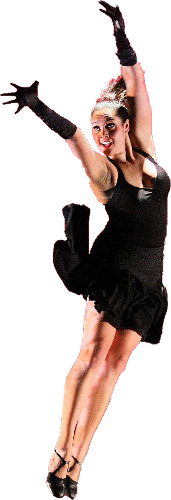
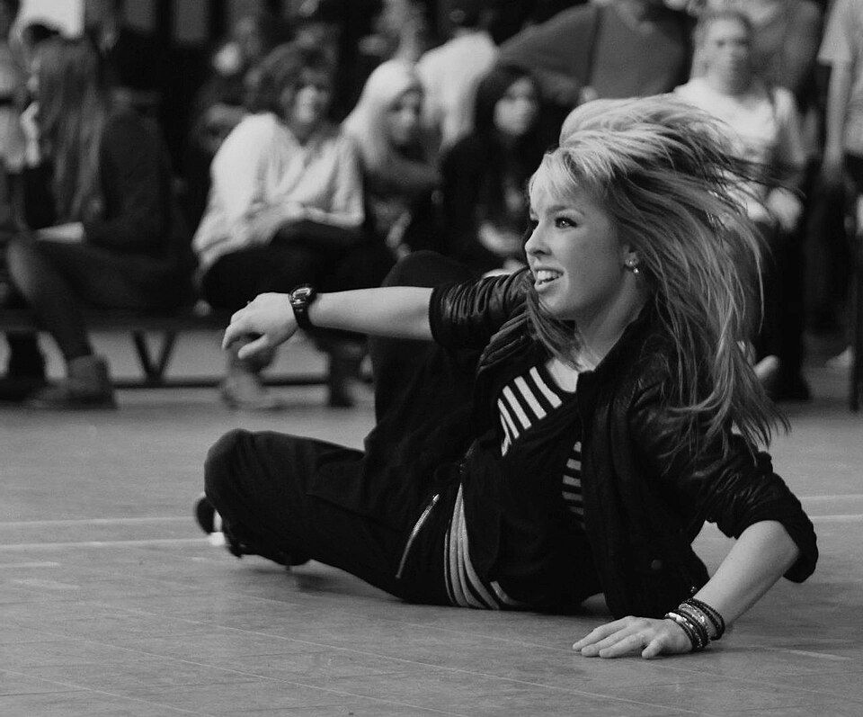
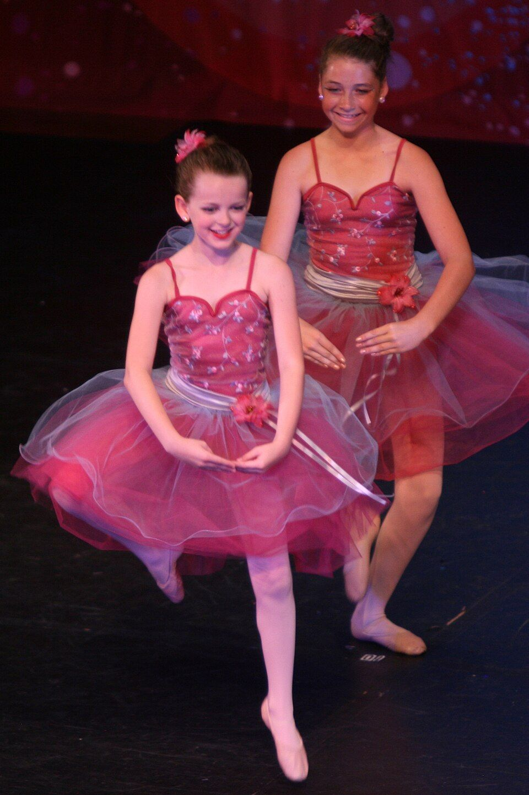
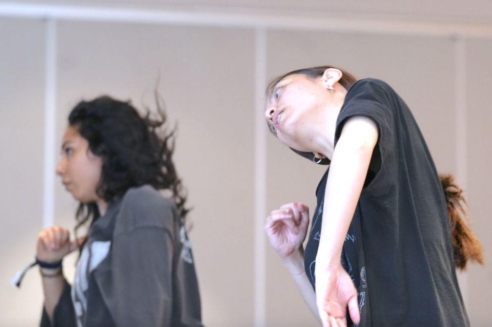
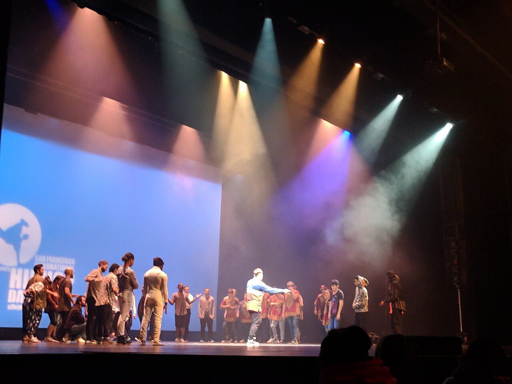
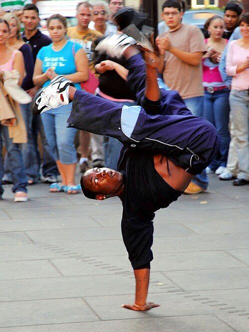

Hip hop,
Jazz & Kids
ほんまちダンス教室生徒募集
4歳から大人まで。体験は1,100円
写真：舞台で跳ぶタップダンサー（米国の公演）。この教室の先生・生徒ではありません。Lambtron／CC BY-SA 4.0（切り抜き）
時間割（2026年11月）
月曜から土曜まで、週14クラス。スタジオは1部屋（36畳）なので、同じ時間に2つのクラスはありません。
年齢を選ぶと、入れるクラスと次の回の体験の残りが出ます。

MON月
体験の残り 2人
満員（次は11月16日）
体験の残り 2人
TUE火
体験の残り 1人
体験の残り 2人
体験の残り 2人
WED水
体験の残り 2人
体験の残り 1人
THU木
体験の残り 2人
満員（次は11月19日）
FRI金
体験の残り 2人
SAT土
体験の残り 1人
体験の残り 2人
体験の残り 2人
ヒップホップジャズ・ストレッチ体験は1回に2人まで。満員の回は次の週に入れます。日曜・祝日は休み。

月謝と入会金（税込）
¥5,500
4〜6歳のキッズ、週1回の月謝です。
月謝袋ほんまちダンス教室
- キッズ 4〜6歳週1回・50分
- 5,500円
- キッズ 小学生週1回・60分
- 6,050円
- 中学生〜大人週1回・75分
- 6,600円
- 週2回どの組み合わせでも
- 11,000円
- 通い放題中学生〜大人
- 13,200円
- 入会金体験した月に入会すると半額の 2,750円
- 5,500円
4月5月6月7月8月9月10月11月12月1月2月3月
- 月謝はこの袋に入れて、月の最初のレッスンの日に持ってきてください（口座振替もできます）。
- スポーツ安全保険に入ります。中学生以下 800円、大人 1,850円（年1回、4月）。
- 兄弟・姉妹で通うと、2人目から月謝が550円引きです。
- 8月はお盆の1週、12月は年末の1週が休みで、月謝は同じです。

体験レッスンの申し込み
¥1,1001回だけ、いつものクラスに入って一緒に踊ります。当日に現金でお支払いください。
- 下でクラスと日を選んで送る。前の日までに、教室から電話かメールで確かめます。
- 当日は15分前に。動きやすい服、室内用の運動靴、飲み物、タオルを持ってきてください。
- 終わったあと、入会するかはその日に決めなくてかまいません。その月のうちに入会すると入会金が半額です。

第12回 発表会
- 日にち
- 2027年3月21日（日）
開場 13:00・開演 13:30 - 会場
- 三根市民会館 大ホール（1,012席）
- 見に来る方
- 入場無料・整理券なし。どなたでも入れます。
- 出る人
- 全14クラスの生徒。出演費 8,800円（衣装代こみ）。
申し込みは11月30日（月）まで。12月に入会した人も出られます。
Programme第12回 ほんまちダンス教室 発表会
- 第1部 13:30〜
- キッズ 入門（土）
- キッズ ヒップホップ 入門（月）
- キッズ ジャズ 入門（木）
- キッズ ヒップホップ（月）
- キッズ ジャズ（火）
- キッズ ヒップホップ（土）
- キッズ ヒップホップ（水）
- 休憩 15分
- 第2部 14:40〜
- 大人 はじめてのヒップホップ（土）
- ストレッチと基礎（火）
- ジャズ 初級（火）
- ヒップホップ 初級（月）
- ジュニア ヒップホップ（金）
- ジャズ 中級（木）
- ヒップホップ 中級（水）
- 先生3人の作品
- 全員で踊るフィナーレ
行き方
- 住所
- 三根市本町2丁目8-5 本町アーケード内 2階（入口はたなか文具店の右の階段）
- 電車
- 三根駅の東口から歩いて4分
- 車・自転車
- 市営本町駐車場（30分100円）。自転車はアーケードの裏の置き場に。
- 受付
- 月〜金 16:00〜21:30・土 9:30〜14:30・日曜と祝日は休み
電話 012-345-5678（架空）
